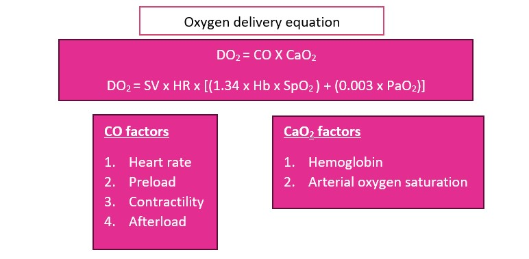

flowchart TD
A(Shock states with low perfusion)-->B(Inadequate oxygen delivery);
B-->C(Anaerobic metabolism);
C-->D(Increased Lactate);
C-->E(Free radical);
C-->F(Immune response);
E-->G(Energy dependent ion <br> gated function loss, <br> microcirculation failure );
E-->H(Cellular death);
F-->H;
F-->I(Vascular dysregulation <br> and coagulopathy);
G-->J(Fluid leak,vasodilataion, <br> tissue swelling);
H-->K(Vital organ damage);
I-->L(Disseminated intravascular <br> coagulopathy);
G-->H
Cardiovascular Dysfunction
Introduction
Cardiac and vascular dysfunction may be classified as hemodynamic impairment or failure. Hemodynamic failure is also referred to as shock. The cardiovascular system (CVS) comprises the blood vessels, blood and the heart. Cardiovascular physiological reserve allows the system to function optimally even in some disease states. When physiological reserve is exhausted the body enters a state of dysfunction. Patients presenting in all acute disease states must have the CVS evaluated to identify dysfunction early, institute the appropriate treatment to prevent irreversible complications and avoid death.
Case Presentation
A 7-month-old female infant, presented with a 2-week history of fever and cough, and a day’s history of poor feeding, vomiting (2 episodes, non-bloody, non-bilous), and diarrhoea associated with lethargy. She presented to the clinic with severe respiratory distress, SpO2-98% on a non-rebreather mask at 15L/min. Chest - she had reduced air entry with coarse crackles in the middle and lower zones, more on the Right. Circulation - Heart Rate was 184 beats per minute, with cold extremities, Capillary Refill Time of 4 seconds, and weak pulse volume. Glasgow Coma Score was 14/15, temperature was 36.7oC. He was given intramuscular penicillin before being transferred to the tertiary hospital. Arterial blood gases revealed pH of 7.227, pCO2 33.1, pO2 59, and HCO3 14.
Shock
Definition
Shock is an acute process characterised by the body’s inability to deliver adequate oxygen to meet the metabolic demands of vital organs and tissues.
Pathophysiology
Among the key functions of the CVS is the delivery of blood to tissues, and perfusion. Figure 1 summarizes the concept of oxygen delivery and adequate blood flow to the tissues with enough oxygen in the blood. This ensures that oxygen and nutrients are sent to the tissues to meet metabolic demands. Blood flow is dependent on stroke volume (mechanical function of the heart) and blood oxygen content of blood. Failure of the CVS to perform this function results in an imbalance in oxygen supply and tissue demand leading to anaerobic metabolism. This alternative energy production pathway to sustain life is associated with unwanted metabolites including lactic acid disturbing the homeostasis environment. When prolonged and not reversed promptly it usually leads to irreversible tissue damage and ultimately, death. Shock is a major cause of morbidity and mortality in children and a leading cause of emergency and intensive care unit admission. Stroke volume is dependent on the volume of blood at the end-diastole (preload), cardiac muscle integrity (myocardial contractility) and the resistance against which the heart pumps (afterload) is influenced by Oxygen carried by haemoglobin (Hb X Arterial oxygen saturation, SpO2) + Dissolved oxygen in the blood (0.003 × Arterial partial pressure of oxygen, PaO2). The oxygen delivery to tissues equation is represented by

CO = Cardiac output, CaO2 = arterial oxygen content, HR = Heart rate, SV = stroke volume, SpO2 = arterial oxygen saturation, PaO2 = partial pressure of arterial oxygen tension.
Clinical stages of shock
In impaired hemodynamic states, the body is not able to deliver blood, oxygen and nutrients to the tissues. This results in a cascade of biomedical processes initiated by anaerobic metabolism and if not corrected the processes lead to vascular endothelial injury and irreversible damage Figure 2. Shock may be categorized into stages to assist with diagnosis and management
| Stage | Pathophysiology | Clinical Features |
|---|---|---|
| Pre-shock | There is impaired hemodynamic status, but the body can fall on its physiological reserve and intrinsic autoregulation to compensate mechanisms to attenuate its untoward undesired effect. | Tachycardia, Tachypnoea, Cool core to periphery temperature |
| Shock | Ensues when the compensatory reserve is exhausted with full-blown clinical manifestation of the cardiovascular system | Above plus Capillary refill time > 3 seconds, +/- hypotension |
| End-organ dysfunction or failure | During this stage distant organs are affected. Usually, the terminal process results from loss of autoregulation leading to death or permanent organ damage in patients who survive. | Neurology (altered level of consciousness) Genito-urinary (reduced urine output) Laboratory (evidence of organ dysfunction - liver, renal, coagulation etc.) |
Classification
At the bedside, shock is conveniently classified as either compensated or uncompensated. The former refers to the early stages of shock when the body can mount a response to maintain perfusion. Uncompensated shock refers to the loss of the body’s compensatory response.
Other classifications based on core-to-peripheral body temperature are cold and warm shock. Clinical presentation may vary depending on the state of the patient and may drift in and out of these classifications. Without intervention and monitoring for stability, there should not be seen an improvement.
Types of Shock
Based on etiology shock may grouped into 5:
- Hypovolemic shock - the most common cause of shock in paediatrics. There is a reduction in venous return (preload) as a result of internal or external losses. Can be from fluid loss/redistribution, e.g. Vomiting, diarrhoea, burns, third-spacing, blood loss/hemorrhagic shock from trauma, Gastrointestinal bleeds.
- Cardiogenic shock- cardiac pump failure secondary to poor myocardial function. E.g. congenital heart diseases, cardiomyopathies- acute myocarditis, and arrhythmias.
- In obstructive shock any mechanical impediment to adequate cardiac output. Eg. Tension pneumothorax, massive pulmonary embolism, cardiac tamponade.
- Distributive shock- inadequate vasomotor tone, severe vasodilatation and increased capillary permeability resulting in fluid moving into the interstitium. Examples include f anaphylactic and shock neurogenic shock.
- Septic shock is usually associated with a combination of distributive, hypovolemic and cardiogenic shock.
Case discussion
According to the World Health Organization, shock may be clinically diagnosed when there are cold extremities, a capillary refill time of more than 3 seconds, and a fast weak pulse. Hypotension is usually a late sign and not a requirement to diagnose shock promptly. Additional signs attributed to other organs impacted are
- altered mental status,
- low urine output,
- rising liver enzymes, lactic acidosis or base deficit,
- low mixed and central venous oxygen saturation.
The 7-month-old baby presents with cold extremities, tachycardia, and slow delayed refill time consistent with shock. It is important to know the aetiology to manage appropriately. Hypovolemia, septic shock, and obstructive may be implicated as the causes of this child’s current condition.
- The history of the illness includes fever cough, poor feeding, vomiting and diarrhoea.
- Fever, poor feeding, vomiting and diarrhoea suggest possible fluid losses and therefore hypovolemia.
- Similarly, fever and features suggestive of infection could result from sepsis as a cause of the shock.
- The cough, respiratory distress requiring oxygen, a hint of respiratory tract infection and possible complications such as pneumothorax.
- Lastly, penicillin causes anaphylaxis hence there is a potential anaphylactic.
The most probable cause of this infant’s shock is septic shock. Given fever, poor feeding, vomiting and diarrhoea the child may have low intravascular volume. The suspected infection has progressed to severe disease and the release of cytokines and other immune responses at the tissue and cellular level leading to damaged endothelium and consequently fluid leak from the intracellular space. Inflammatory response and endotoxins may damage vasodilation and myocardium with myocardial dysfunction.
The combination of these processes compromises perfusion to the tissues all tissues especially vital organs, the brain, kidney, liver and coagulation. A four-organ system model which included criteria for respiratory, cardiovascular, coagulation, and neurologic dysfunction has been developed to guide the diagnosis of sepsis. Whilst diagnosing sepsis at this point may still not be early enough, the new criteria provide new evidence that should sensitize clinicians to pick patients with infection who are critically ill.
Acute gastroenteritis is the most common cause of shock in children. Patients rapidly advance to dehydration and shock because of loss of intravascular volume
Clinical Presentation and Diagnosis
Shock is a clinical diagnosis based on history and examination. It is dependent on underlying pathology but there are overlaps in presentation.
History
- Hypovolemic shock- diarrhoea, vomiting, burns, bleeding, jaundice, trauma
- Cardiogenic shock- known patient with congenital heart disease or cardiomyopathies, heart failure, easy fatiguability, darkened lips and fingers or toes, palpitations, chest pain, diaphoresis and taking frequent breaks during feeds
- Distributive shock- drug history, allergies, spinal surgery,
- Septic shock- fever, cough, jaundice, diarrhoea, vomiting, difficulty in breathing, loss of consciousness, seizures,
Examination
- Tachycardia
- Poor peripheral perfusion- cold extremities, CRT>3s, weak pulse volume
- Respiratory distress signs- tachypnea, use of accessory muscles, flaring of alae nasae, subcostal recession
- Altered mental status
- Hypotension (a late sign)
- Oliguria
- Signs of dehydration
Other findings- jaundice, fever, skin lesions, chest signs of pneumonia or pneumothorax, upper airway obstruction murmurs or other heart sounds, signs of raised ICP, oedema, hypo/hyperglycemia, low SpO2 <92%
Approach to management
Shock is an emergency! Resuscitation must therefore be timely.
Initial assessment
- Triage by following assessment and ensuring the airway is patent and maintainable, and breathing is appropriate for age.
- Administer oxygen
- Admit the patient to the emergency room.
- Secure intravenous access (preferably the largest vein possible). Intraosseous access is equally useful when IV is difficult to obtain.
- The first line of most untreated shock is fluid. Recent evidence suggests that large fluid boluses increase mortality.
- 5-10 ml/kg over 30 minutes, this may be repeated every 30 minutes as needed (non-dehydration related shock). Balanced crystalloids are the fluid of choice (Ringer’s lactate is the crystalloid of preferable), Normal saline may be used in patients with head injuries. Avoid in with or at risk of acute kidney injury.
Second survey
Evaluate the patient for causes of shock and treat accordingly.
- Hypovolemic
- Severe dehydration because of acute gastroenteritis (diarrhoea and vomiting). Rehydrate using WHO Plan B or C as appropriate
- Severe anaemia – transfuse blood.
- Hemorrhage – transfuse blood without blood products as needed
- Monitor response to the fluid bolus every 15 – 30 minutes.
Investigations
Once the patient has been resuscitated tailored but detailed investigations are needed.
Laboratory
- FBC- Anemia, Leukopenia/leukocytosis, thrombocytopenia
- Arterial blood gases- acidosis (metabolic/respiratory), low PaO2, high/low PCO2, high lactate, high anion gap
- Deranged liver and renal function test
- Abnormal electrolytes (low Calcium, hyper/hypokalemia)
- Abnormal clotting profile
- Septic screen - blood, urine, nasopharyngeal swabs, stool, CSF
- Chest x-ray indicated suspected lung pathology such as pneumothorax and infections.
- Echo/ECG – useful for diagnosis and monitoring of shock
- Neuroimaging for suspected brain abscess, meningitis and encephalitis.
- Markers of inflammation/infection- CRP, ESR and procalcitonin. These will be determined by circumstances. It may also be used to guide antibiotic therapy decisions.
Additional treatment
For shock not responding to fluid of 30-40 ml/kg the following may be added.
- Cardiogenic shock - Inotropes to improve contractility– adrenaline or dobutamine.
- Obstructive shock
- Tension pneumothorax – thoracostomy/chest tube insertion
- massive pulmonary embolism – anticoagulants
- cardiac tamponade - pericardiocentesis
- Distributive shock – adrenaline, phenylephrine
- Septic shock
- For fluid refractory - noradrenaline, adrenaline, dobutamine
- For vasopressor and inotrope refractory - steroid stress dose
- Antimicrobial therapy in sepsis within an hour.
Supportive therapy
In inotrope-refractory shock, steroids may be given for adrenal insufficiency.
- Intensive Care Unit admission as required
- Neuroprotective measures- normothermia, normoglycemia, anti-seizure(if indicated), hyperosmolar therapy
- Providing ventilatory support- invasive vs non-invasive
- Worsening cardiac function requires invasive treatment options like ECMO (Extracorporeal Membrane Oxygenation) and ventricular-assisted devices. The underlying cause should be looked at after resuscitation and stabilization
- Correct all electrolyte abnormalities
- Nutritional rehabilitation- early initiation of enteral feeds associated with good outcomes
- Analgesia, antipyretics, anxiolytics. Hemotransfusion if indicated.
Monitoring
The patients must be continuously monitored as treatment is instituted. Inotropes titrated to effect per the average values per patient age (pulse rate, CRT, BP, RR, SPO2 and urine output). In low-resource facilities,
Monitoring of abnormal laboratory indices for improvement/deterioration.
Conclusion
Shock is an emergency requiring early recognition, triaging and treatment. Initial treatment for almost all shock is careful restrictive fluid resuscitation. Vasoactive drugs may be required in patients who are refractory to fluid. Patients with shock may be fit from locations where monitoring can be meticulously adhered to.